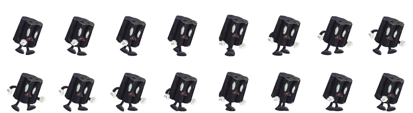

Sprites
Sprite sheets are image files which contain multiple game images.
This example uses a public domain file from the Glitch assets collection. Thanks to Tiny Speck for opening their assets up! Here's the image we'll be referring to:

In this case, it depicts multiple frames of a single animation, but it's common for sprite sheets to combine many different animations.
Loading sprite sheets
To prepare the sheets for use, you need to not only load them, but specify the locations of individual sprites within them. This can be done in one step with Crafty.load.
var assetsObj = {
"sprites": {
// This spritesheet has 16 images, in a 2 by 8 grid
// The dimensions are 832x228
"glitch_walker.png": {
// This is the width of each image in pixels
tile: 104,
// The height of each image
tileh: 114,
// We give names to three individual images
map: {
walker_start: [0, 0],
walker_middle: [7, 0],
walker_end: [7, 1]
}
}
}
};
Crafty.load(assetsObj, callback)Some sheets will have padding around each image, or around the sheet as a whole. You can specify this with paddingX, paddingY, and paddingAroundBorder fields.
Static sprites
To use a static sprite, we refer to the map we defined earlier. Crafty will have auto-generated components with those names, adding the "Sprite" component behind the scenes.
// This will display the image associated with walker_start
// It automatically gets the dimensions of that image: 104x114
var actual_size = Crafty.e("2D, Canvas, walker_start")
.attr({x: 10, y:10});
// An image from a different part of the sprite sheet
// Here we scale it to half size
var small_sprite = Crafty.e("2D, Canvas, walker_middle")
.attr({x:150, y:10, w:52, h:57})Animating sprites
You can animate one of the sprites above by adding the "SpriteAnimation" component.
var walker = Crafty.e('2D, Canvas, walker_start, SpriteAnimation');Animation is handled by defining and playing "reels". To define a reel, call the reel method with a name, a duration in ms, and a list of frames. Here we define a reel called "walking" which will last for 1 s, and explicitly list the 16 frames in the order we want them to play:
walker.reel("walking", 1000, [
[0, 0], [1, 0], [2, 0], [3, 0], [4, 0], [5, 0], [6, 0], [7, 0],
[0, 1], [1, 1], [2, 1], [3, 1], [4, 1], [5, 1], [6, 1], [7, 1]
])Then, to play the animation, you simply call the animate method to start it! This method takes two parameters: the name of the reel, and the number of times to play it. To loop indefinitely, pass a value of -1:
walker.animate("walking", -1)Finally, here's a complete example running on jsbin, showing our sprite walking in place: JS Bin
Try adding walker.animationSpeed = 2 at the end of the go() function!
 google groups
google groups starwed@gmail.com
starwed@gmail.com github
github